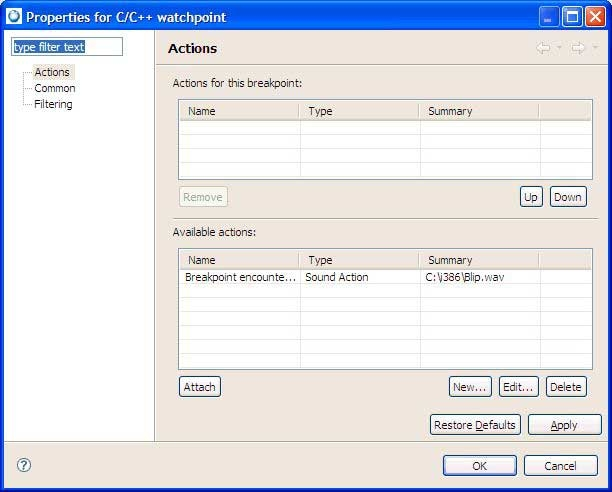
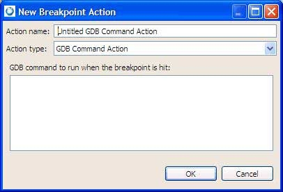

You can define one or more actions to attach to any breakpoint. When the debugger encounters a breakpoint, the appropriate action is executed.
To set an action for a breakpoint, do one of the following:
- Set a breakpoint from the preferences:
- Select .
- Expand C/C++ and expand Debug, then select Breakpoint Actions.

- Click New to set a new action to specify when the debugger steps through the code and encounters a breakpoint.
- Click OK when finished.
- Set breakpoint actions directly from the Breakpoint view:
- In the Breakpoint view in the Debug perspective, right-click and select Properties.
- Select Actions.

- In the Available Actions area, click New to set a new action to specify when the debugger steps through the code and encounters a breakpoint.
- Specify a name and an action type.
Note: If you select the GDB Command Action for your Action Type, you must enter each GDB command on a separate line in the command textbox; only one command per line is allowed.

- Click OK when finished.
- Click OK.
- In the Available Actions area, select an action that you want to attach to a breakpoint, and click Attach. The action is added to the selected breakpoint. Use the Up and Down buttons to adjust the order of the actions as you would like them to occur when the breakpoint is encountered.
As the debugger encounters the breakpoint, any defined GDB commands will run and the commands' results will appear in the GDB console.